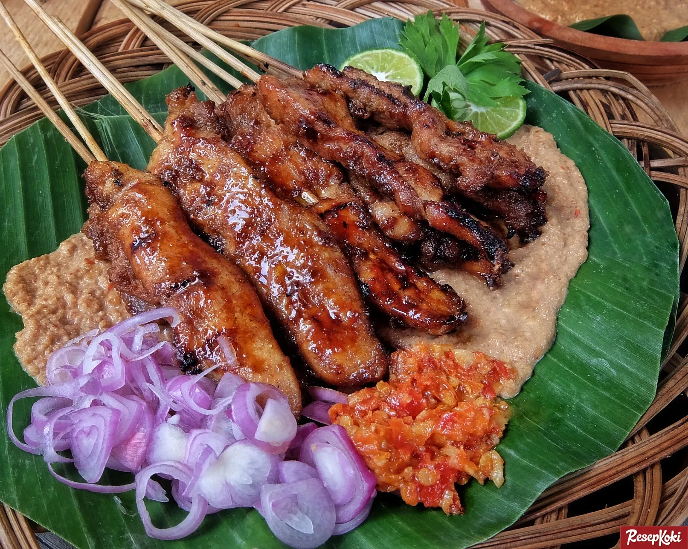
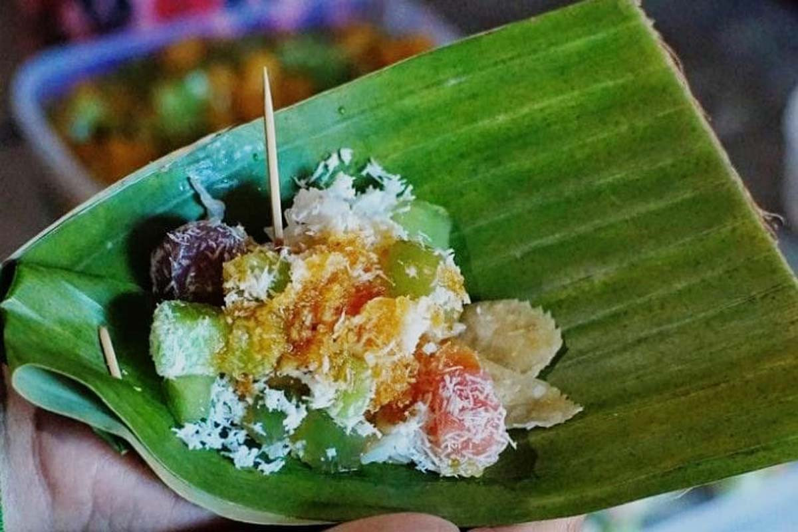

Kuliner Khas
Cita rasa autentik yang menggugah selera

Sate Ponorogo
Sate khas Ponorogo dengan bumbu kacang yang gurih dan sedikit pedas. Keunikannya terletak pada potongan daging yang tebal dan bumbu kacang yang kental, disajikan dengan lontong dan kuah bumbu yang kaya rempah.

Nasi Pecel Ponorogo
Nasi pecel dengan bumbu kacang khas Ponorogo yang lebih manis dan gurih. Disajikan dengan aneka sayuran rebus, rempeyek, dan kerupuk, menciptakan harmoni rasa yang sempurna.

Gethuk Golan
Jajanan tradisional berbahan dasar singkong yang dihaluskan dengan gula kelapa. Teksturnya lembut dengan rasa manis alami yang menggambarkan kesederhanaan dan kehangatan budaya Ponorogo.